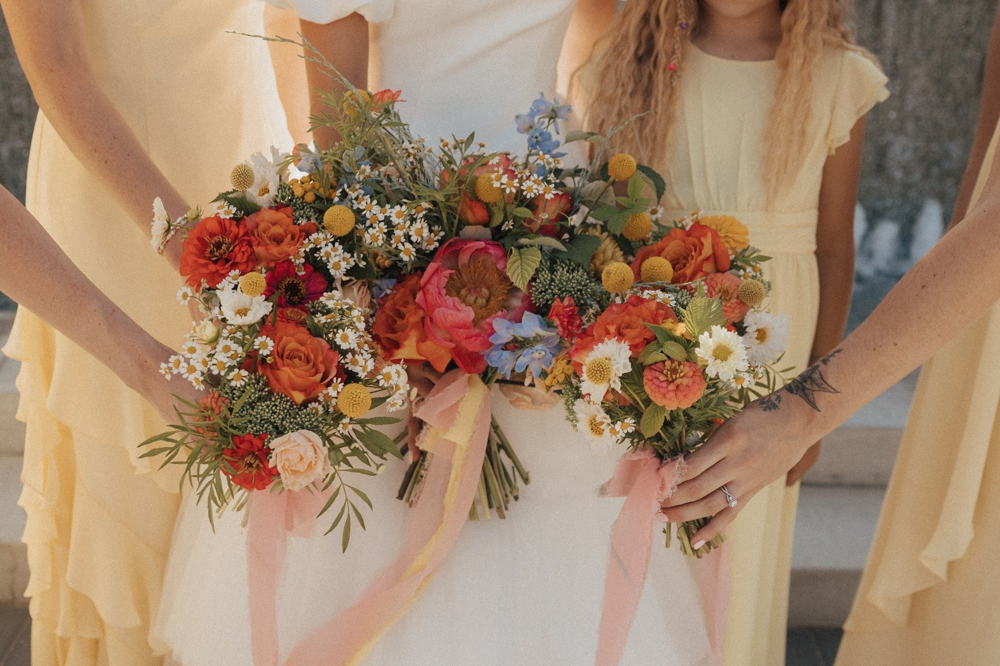
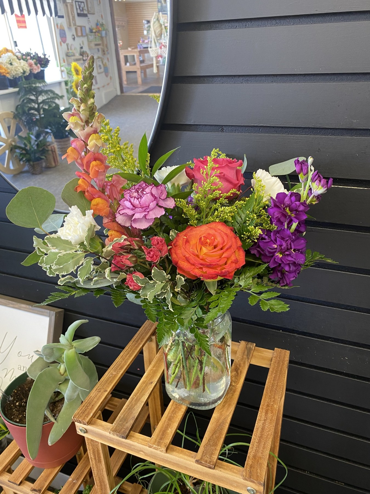
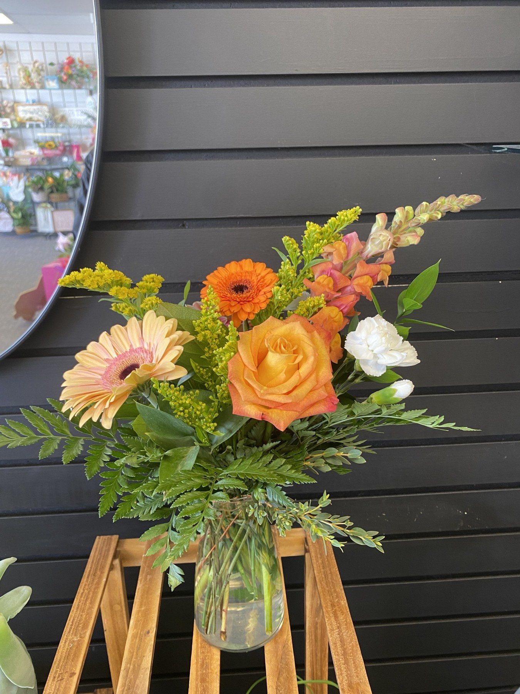

01 / THE EXPERIENCE
Wedding
Flower Bar
A charming, staffed floral station where reception guests choose their own stems and create little bouquets to take home.
Make memories with flowers ↗ROOTED IN LOVE. ARRANGED WITH CARE.
A bouquet to give. A memory to make. A little beauty to keep. Discover flowers with a personal touch, thoughtfully made by The Garden Girl.
Fresh blooms · Creative experiences · Lasting beauty

a little wild. a little wonderful.THREE WAYS TO ENJOY FLOWERS
Make something yourself, let Hallie arrange it for you, or choose something beautiful to keep.
A charming, staffed floral station where reception guests choose their own stems and create little bouquets to take home.
Make memories with flowers ↗Preorder thoughtful arrangements for gifts, special occasions, weddings, or simply bringing a little joy into your day.
Explore fresh flowers ↗Custom artificial arrangements made around your style, for something beautiful you can enjoy for years to come.
Find your lasting flowers ↗
FLOWERS BY HALLIEFRESH FLOWER PREORDERS
Birthdays, celebrations, wedding days, or no occasion at all—there’s always a reason for flowers. Hallie creates fresh arrangements with your moment in mind.
Tell us who they’re for, when you need them, and what you’re imagining. Flower choices and availability will be discussed as part of your custom quote.
Request fresh flowers ↗CUSTOM ARTIFICIAL ARRANGEMENTS
Love the look of flowers you can keep? Hallie creates custom artificial arrangements for those who want lasting beauty.
Share your preferred colors, the space or occasion you’re designing for, and any inspiration. Together, you can find a floral design that feels like you.
Let’s plan your everlasting arrangement ↗Your colors.
Your style.
Made to keep.
MEET YOUR GARDEN GIRL
From growing flowers to arranging them, I love every part of the process.
I’m Hallie Williams, the owner of The Garden Girl. I’m studying horticulture and floral design at BYU–Idaho, and I love everything about flowers, from growing them to arranging them. I even grew and arranged the flowers for my own wedding!
I’ve also worked in two different floral shops, where I’ve been able to learn more about floral design and work with all kinds of flowers. I started The Garden Girl because I love flowers and want to share that love with others.
With love, Hallie
Grown from a love of flowers.A FEW LOVELY THINGS
A look at her previous floral arrangements.
Select any photo for a closer look.
LET’S MAKE SOMETHING BEAUTIFUL
Planning a wedding flower bar, ordering fresh blooms, or dreaming up an everlasting arrangement? Tell Hallie a little about what you have in mind.
Your preferred service, date, colors, and inspiration. For weddings, include the venue and estimated guest count, too.